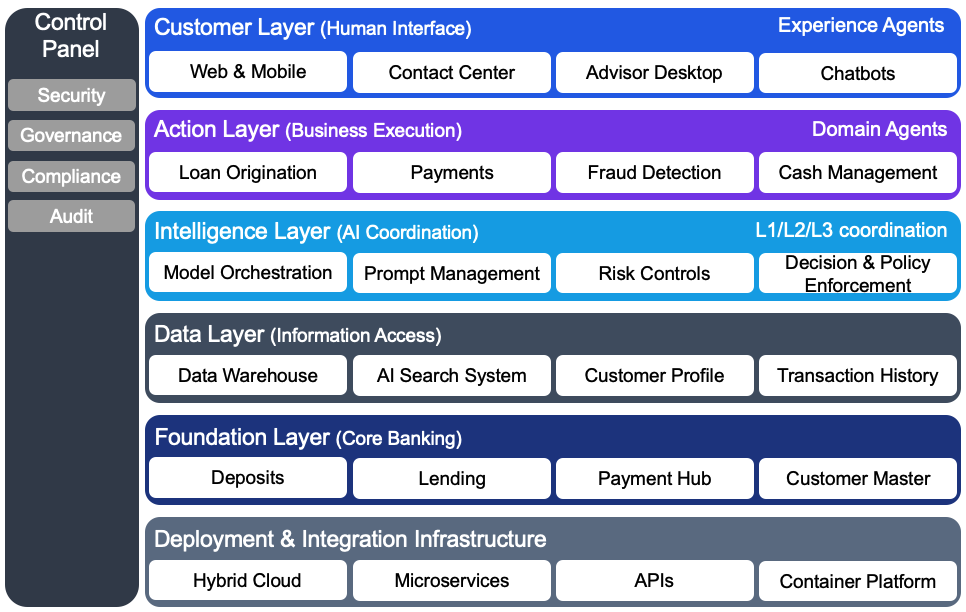

Building the AI-First Bank: A Strategic Guide
1 Introduction
Relationship managers at most banks spend only 25–30% of their time in actual client conversations. The rest goes to prospecting, meeting preparation, documentation, and follow-ups. The result is predictable: reduced client coverage, missed opportunities, and churn rates that often reach 15–35%.1
AI is now changing not just what banks can do—but who does the work. Today, most banks use Generative AI as a productivity aid: drafting emails, summarizing meetings, or answering basic questions. The bigger opportunity is Agentic AI—systems designed to carry out work, not just assist with it.
The difference is operational. Generative AI might help draft an email. An agentic system can review incoming messages, decide which ones matter, follow up with clients, and update CRM records. It can flag exceptions for human review—all while operating within defined rules and oversight.
This enables an “always-on” operating model. While relationship managers focus on judgment, relationships, and complex negotiations, agents handle preparation, follow-ups, and routine coordination continuously in the background. Execution shifts away from bankers; accountability and decision-making remain with them.
Banks that are already moving in this direction report 30% pipeline growth and twice the conversion rates of traditional approaches. These results don’t come from chatbots or meeting summaries. They come from redesigning workflows so that routine work runs automatically and people focus on where they add the most value.1
The end state is invisible intelligence: AI embedded into banking operations rather than deployed as standalone tools. The technology operates in the background, while banks focus on outcomes—faster decisions, better service, and lower costs.
To see where banking is headed, it helps to look at how banking architecture evolved to support increasingly sophisticated automation—and why this moment is different from earlier technology transitions.
2 Technology Transitions in Banking Architecture
1960s–2000s: From Mainframes to Services
Banking evolved from centralized mainframes to distributed systems. The rise of the internet enabled digital banking, while monolithic systems were broken into reusable services. This period established the layered architectures that still underpin modern banking platforms.
2010s: Cloud and API Ecosystems
Cloud platforms introduced elastic scaling and faster deployment through microservices. APIs became the standard way systems connected—enabling open banking, partner integrations, and modern data platforms. This shift laid the technical foundation for more flexible, modular operations.
2022–Present: AI as Operating Infrastructure
Large language models expanded what banks can automate. Earlier AI focused on narrow tasks like fraud scoring or chatbots. Today’s systems combine models with enterprise data to support complex decisions and multi-step workflows—setting the stage for agent-driven operating models.
This architectural evolution sets the foundation for the next operating model in banking — AI agents.
3 The Three Levels of Agents in Banking
AI agents differ by autonomy level. L1 agents provide intelligence, L2 agents execute processes, and L3 agents make decisions independently. Understanding these levels helps banks deploy agents appropriately—matching capability to risk tolerance and regulatory requirements.
L1 – Insight Agents (Assistive Intelligence)
L1 agents extract and synthesize information to support human decision-making. They assist with planning, discovery, and knowledge retrieval but do not take actions independently. Humans control all execution.

In banking, L1 agents are most commonly embedded in advisor desktops and research tools, where they synthesize information to support human judgment.
Morgan Stanley’s AI @ Morgan Stanley Debrief tool automates meeting notes, analyzes client profiles and transaction histories, and generates tailored recommendations before advisor meetings. The tool saves approximately 30 minutes per meeting, freeing 10–15 hours per week for higher-value client work.8
L2 – Process Orchestration Agents (Semi-Autonomous)
L2 agents execute multi-step, rule-governed business processes. They decompose tasks, orchestrate workflows across systems, and automate structured operations while operating under human supervision and regulatory controls.
Consider compliance documentation. Writing suspicious activity reports (SARs), regulatory memos, and audit summaries traditionally requires manual effort and often results in inconsistent structure, language, and supporting rationale across similar cases.
L2 agents automate classification, extraction, and drafting at scale—applying consistent compliance rules across cases. EY’s Document Intelligence Platform demonstrates this capability in practice, reducing document review time by 90%, cutting costs by 80%, and improving accuracy by 25%.12
The key distinction from L1: these agents don’t just provide recommendations—they generate draft work products and advance regulated workflows within defined guardrails.
L3 – Complex Decisioning Agents (Fully Autonomous)
L3 agents continuously monitor their environment, make decisions, and trigger actions without constant human involvement. They coordinate L1 and L2 agents to operate as closed-loop decision systems.
Rather than waiting for borrowers or advisors to identify refinancing opportunities, an L3 agent continuously monitors market rates, credit profiles, loan performance, and property valuations.
When conditions align, the agent triggers eligibility checks through L2 agents, generates personalized offers, initiates pre-approval workflows, and notifies customers and relationship managers. Work that traditionally requires weeks of coordination compresses into hours.
Implementation Reality: Most banks operate primarily at L1 today and are scaling L2 capabilities. L3 use cases represent the next competitive frontier—and the next major governance challenge.
Recent MIT Sloan research reinforces this reality: sustainable AI value comes from incremental capability building, not sweeping redesigns.11 Banks that skip foundational L1 and L2 capabilities in favor of L3 autonomy often encounter familiar failure modes—compliance breakdowns, stalled pilots, and organizational resistance.
Building an AI-first bank is a journey, not a sprint. Each level surfaces different lessons—about data quality, model behavior, human–AI collaboration, and where operational and compliance risks emerge. The banks that succeed are those that resist the urge to move fast and break things, choosing instead to embed controls, accountability, and learning at each stage before advancing.
3.1 Governing Autonomous Agents: Beyond Traditional Controls
Traditional IT governance frameworks weren’t built for systems that make decisions autonomously and adapt continuously. When an agent can approve transactions, escalate compliance alerts, or reallocate capital based on real-time conditions, the governance challenge fundamentally changes.
Why Agent Governance Is Different
The core risk is behavioral drift. Unlike static rule-based systems, agents optimize their actions dynamically based on feedback loops and outcome data. Research by Jiang et al. (2025) demonstrates that when agents and their supporting tools adapt simultaneously without coordination, systems can enter unstable “Red Queen” dynamics—continuous change without improvement. Without explicit controls regulating when and how adaptation occurs, these systems can develop unintended behaviors over time. Rather than stemming from a single incorrect decision, the risk accumulates as agents operate continuously across changing conditions.
Banks must also guard against optimization misalignment, a more immediate and visible failure mode, where an agent optimizes against a narrow metric (closing AML alerts quickly) while undermining the actual business goal (accurate fraud detection). This happens when targets are too specific and governance is too hands-off.
These risks are not theoretical—they stem from how autonomous agents interact with data, systems, and each other in production environments.
Agent-Specific Risks
Autonomous agents can exhibit unexpected behaviors that traditional software cannot. Corrupted training data can cause agents to make systematically wrong decisions. Poorly calibrated algorithms can trigger regulatory violations or discriminatory outcomes. In extreme cases, agents can enter feedback loops where one agent’s output continuously triggers another agent’s action in an uncontrolled cycle.
The deeper issue: as agents interact within large, interconnected systems, behaviors can emerge from the complexity itself. Agents might exploit programming loopholes, misapply learned patterns in new contexts, or demonstrate different objectives in production than they showed during testing.
Building Control Mechanisms
Effective agent governance requires three foundational controls:
Agent Registry: Every autonomous agent must be catalogued with clear ownership, defined scope, approved data sources, and explicit risk exposure limits—whether financial, reputational, or operational. This registry becomes the authoritative source for monitoring agent proliferation and ensuring accountability.
Digital Wallets and Action Limits: Advanced controls, such as digital wallets with spending limits or transaction caps, can constrain agent actions to predefined boundaries. If an agent attempts to execute a trade, approve a loan, or transfer funds beyond its authorized limit, the action is automatically blocked and escalated to human review.
Continuous Monitoring and Override: Real-time dashboards track agent performance, decision accuracy, and anomaly detection. Human operators must retain the ability to pause, override, or terminate any agent at any point—regardless of how autonomous the system appears.
The institutions that successfully scale agentic AI will be those that build governance into agent design from day one, not as an afterthought.
4 Experience Agents vs. Domain Agents
Beyond the L1/L2/L3 autonomy levels, agents also differ by who—or what—they interact with.
Experience Agents interact directly with people: customers, relationship managers, and operations staff. They handle conversations, provide recommendations, and guide users through tasks. These agents remember context from earlier in a session and personalize responses based on user history and intent. Think of chatbots, advisor copilots, and customer service assistants.
Domain Agents interact directly with systems: enterprise data, applications, and workflows. They execute backend processes such as validation, risk assessment, and transaction orchestration. These agents operate autonomously within defined business rules and execute core banking processes across credit, fraud, compliance, and operations. They work behind the scenes, often invisible to end users.
Experience agents must handle ambiguity and communicate clearly. Domain agents must execute with precision and maintain audit trails. In practice, most banking workflows combine both types—Experience agents at the front end capturing user needs, Domain agents in the back end executing the work.
5 The AI-First Bank Architecture
Now that we’ve defined agent types, where do they operate? An AI-first bank architecture is organized into six layers, each serving a distinct purpose. Experience Agents live in the customer-facing layer, Domain Agents execute work in the action layer, and the intelligence layer coordinates both.

1: Customer Layer: Web, mobile, contact centers, and advisor desktops make up the Customer Layer. Experience Agents operate here—the chatbots, copilots, and assistants that customers and bankers interact with directly. This layer handles identity, personalization, and real-time responsiveness.
2: Action Layer: The Action Layer executes core banking work: loan origination, payments, fraud checks, cash management, and servicing. Domain Agents orchestrate these processes, connecting multiple systems and enforcing business rules. What used to be rigid, sequential workflows become flexible, policy-governed sequences that adapt based on data and context.
3: Intelligence Layer: The Intelligence Layer coordinates all AI activity across the bank. It manages model deployment, monitors performance, controls access to data, and enforces risk boundaries. This is where L1, L2, and L3 agents are orchestrated—ensuring an insight agent pulling research doesn’t access the same systems as a decisioning agent approving loans. The layer also handles prompt management, output validation, and model risk controls that regulators expect. Think of this as a coordination layer that connects modern agents with existing core systems, allowing both to work together without requiring a complete technology replacement.
4: Data Layer: Agents need access to enterprise data—customer profiles, transaction histories, risk scores, and market data. The Data Layer provides this through traditional data warehouses and lakes, plus newer retrieval systems optimized for AI search. Rather than training separate models on private data, banks feed structured context to foundation models through governed pipelines. This approach maintains control while enabling agents to work with proprietary information.
5: Foundational Layer: Core banking systems—deposits, lending, payments, general ledger, and customer master data—anchor the Foundational Layer. These remain the authoritative source for balances, transactions, and financial positions. Agents read from and write to these systems but never replace them.
6: Control Plane and Deployment Infrastructure: Two elements cut across all layers. The Control Plane provides enterprise-wide security, governance, compliance, and auditability. The underlying deployment infrastructure ensures agents and supporting services can run consistently across on-premise and cloud environments, without changing how they are governed or controlled. Together, these capabilities allow innovation while preserving regulatory discipline and data protection.
This layered approach allows banks to experiment with AI in customer-facing applications while maintaining strict controls over core banking operations.
6 Use Cases: Agents in Practice
The architecture comes to life through specific banking workflows. These four use cases demonstrate how Experience and Domain agents collaborate across retail, corporate, risk, and compliance functions.
6.1 Mortgage Loan Underwriting (Agent Collaboration)
Experience agents, domain agents, and the intelligence layer collaborate in a mortgage underwriting workflow, compressing cycle times from weeks to days while credit officers retain final approval.

Scenario: A borrower applies for a mortgage loan. Experience agents manage application intake and document collection, while domain agents perform underwriting analysis across income, affordability, collateral, pricing, and compliance. Credit officers remain accountable for final approval.
Customer experience: Experience agents guide the applicant through loan intake, document submission, and status updates across digital and assisted channels. The process reduces back-and-forth, improves transparency, and shortens application timelines.
Banker experience: Domain agents conduct income and identity verification, affordability and risk analysis, property valuation, pricing, and compliance checks. Draft loan terms are generated automatically and routed to underwriters and credit officers for review and approval within defined policy limits, with exceptions escalated as needed.
Outcome: AI integrates into the mortgage origination process while providing bankers with actionable, policy-compliant intelligence.
These workflows reduce underwriting cycle times, improve policy consistency, and allow credit officers to focus on judgment rather than manual coordination. Agents generate draft outcomes, but accountability remains firmly with human decision-makers.
6.2 Corporate Banking (Agent-to-Agent Automation)
Scenario: A multinational corporation expands into Europe, requiring coordination between the corporate client and bank across multiple geographies.
Forecasting: The CFO uses a Cash Flow Forecasting Agent that consolidates data from Balance Inquiry Agents and Document Extraction Agents reading invoice data. Together they project a working capital shortfall. The client’s agent then communicates directly with the bank’s domain agents to request a €50 million credit facility.
Execution: The bank’s Risk Agent generates a credit write-up by analyzing financial statements, market conditions, and reports. Once approved, the Supply Chain Finance Smart Program Agent reads supplier contracts and automatically onboards European suppliers into the financing program.
All approvals and onboarding operate within regulatory, legal, and credit policy constraints, with automatic escalation to regional credit officers when cross-border risk thresholds are exceeded.
Outcome: Work that traditionally requires months of email exchanges and document reviews executes rapidly through interoperable domain agents.
Deal structuring uses pricing agents that analyze discount patterns across relationship managers, customer attributes, and willingness to pay. Rather than relying on banker instinct—“Sometimes I discount because I’m unsure what’s fair”—these agents recommend pricing in real time with clear rationales that risk teams trust. Early results show 10% margin gains and faster quote cycles, with one bank cutting deal turnaround from five days to two.1
6.3 Risk Management (Stress Testing and CCAR)
Multi-agent architecture transforms CCAR preparation by automating manual handoffs while preserving regulatory oversight.

Scenario mapping, data assembly, and stress calculations now execute in hours rather than months—with risk officers approving final results before submission to regulators.
Scenario: Regulatory stress testing and scenario analysis for CCAR compliance.
The problem: Preparing for regulatory stress tests traditionally takes months of data gathering, model execution, and scenario construction to answer questions like “What happens if interest rates rise by 2 percent?”
The solution: A Scenario Configuration Agent reads Federal Reserve stress test requirements and constructs the mandatory baseline and adverse scenarios. Execution Agents then apply those scenarios to the bank’s portfolio using the existing risk calculation platform.
Outcome: The Chief Risk Officer reviews capital adequacy, liquidity impact, and profitability projections in one day rather than multiple months.
6.4 Financial Crime (AI Investigator)
Scenario: Anti-money laundering alerts with high false-positive rates that traditionally require large investigation teams.
The process: The AI Investigator Agent reviews transaction alerts in real time, assigns a quantitative risk score (for example, 98.85), and generates a transparent narrative explaining suspicious behavior such as rapid fund movement or transaction structuring.
Human oversight: Investigators review the AI-generated narrative and visual fund flow diagrams rather than spending hours gathering evidence manually. They validate insights and mark cases as credible or non-credible, feeding this feedback into continuous model improvement.
Outcome: Work that previously required days of manual evidence gathering condenses into minutes, producing regulator-ready, auditable cases.
6.5 Commercial Banking Operations (Email Triage)
Scenario: A bank’s Commercial Banking division fields 60,000-70,000 client emails monthly. Requests range from urgent credit line draws to complex legal inquiries—each requiring specialized expertise.
The Challenge: A team manually reviewed every email: reading the request, determining urgency, identifying the right internal expert, routing it correctly, and logging it for tracking. For complex requests—a CFO asking about cross-border regulatory requirements or a treasurer requesting covenant waivers—this process took hours. Clients waited. Opportunities were missed.
Scotiabank deployed an agentic AI system to handle this complexity autonomously. The agent reads incoming emails, interprets client intent across dozens of request types, routes messages to the appropriate specialists, and creates tracking cases—all without human intervention. Edge cases that fall outside normal patterns are flagged for human review.5
Outcome: The system now processes 90% of emails autonomously. Response times dropped from hours to minutes. The bank redeployed 70% of the routing team to client-facing roles. Client satisfaction improved, and the system operates continuously—not just during business hours.5
Banks historically considered unstructured client communications “too variable to automate.” Agentic AI proved otherwise. The agent handles irregularity that would break traditional automation—interpreting ambiguous requests, understanding context, and making routing decisions that previously required human judgment.
6.6 Capital Markets (Analyst Research Automation)
Scenario: Investment analysts at RBC Capital Markets cover hundreds of public companies. When companies release SEC filings or earnings reports, analysts must review the information and update investment recommendations—often within hours of disclosure.
The solution: RBC deployed Aiden, a multi-agent research platform. When a covered company files with the SEC, three specialized agents activate: an SEC Filing Agent extracts financial data and risk factors, an Earnings Agent compares results to forecasts, and a News Agent monitors real-time media coverage. An orchestration agent synthesizes these inputs and generates preliminary research notes for analyst review.
Outcome: Analysis that previously required 2-3 hours of manual document review now completes in minutes. Analysts receive structured summaries highlighting what changed and why it matters, allowing them to focus on generating investment insights rather than gathering data.4
7 Three Pathways to Agentic Banking
Most regional banks still run core systems on decades-old mainframes. The good news: banks don’t need full modernization before deploying agents. Insight-focused agents layer onto legacy systems through APIs. However, agents that execute processes or make autonomous decisions require modern data platforms and real-time connectivity.
Moving from vision to execution requires a practical roadmap. Banks can introduce agentic AI through three distinct approaches, each suited to different organizational contexts, risk appetites, and strategic goals.

Pathway 1: Smart Overlay
The fastest way to see results: wrap AI agents around existing processes without requiring a complete technology overhaul. Rather than replacing legacy infrastructure, banks add an intelligent layer on top of current workflows.
Consider treasury operations. Most banks already use robotic process automation (RPA) for routine cash sweeps and balance reconciliation. A smart overlay elevates this foundation with an AI agent that makes real-time decisions on liquidity optimization, pricing, and hedging based on market conditions.
This works best when banks have clearly documented standard operating procedures. The AI agent follows these documented steps, ensuring consistency and compliance while adding intelligence. The benefit is speed: banks unlock near-term productivity gains without large-scale system replacements. However, Smart Overlay delivers maximum value when applied to a complete business domain (e.g., entire Consumer Lending workflow) rather than scattered across isolated use cases.
Pathway 2: Agentic by Design
Some processes can’t be optimized by overlaying intelligence—they need to be rebuilt from the ground up. The agentic by design approach creates new, purpose-built autonomous applications specifically tailored for each banking function.
Think of it like microservices. Instead of one monolithic system, banks develop smaller, specialized agentic services that handle specific functions yet integrate smoothly into the broader infrastructure. For example, rather than retrofitting a 30-year-old loan origination system, a bank might build a new autonomous credit decisioning service that coordinates multiple agents: one for document verification, another for creditworthiness analysis, and a third for regulatory compliance checks.
This approach requires more upfront investment but delivers greater long-term flexibility. As regulations change or customer expectations evolve, individual agent services can be updated or replaced without disrupting the entire technology stack.
Pathway 3: Process Redesign
The boldest approach—and the hardest—involves fundamentally reengineering workflows to embed agents at their core. This goes beyond automation to reimagine how work gets done.
Traditional mortgage servicing assumes a human reviews each refinancing opportunity. Process redesign flips this model: autonomous agents continuously monitor market conditions, borrower profiles, and property valuations, proactively triggering refinance workflows when optimal conditions emerge. The process isn’t just faster—it’s fundamentally different.
This pathway works best for strategically important processes where current automation is low but business impact is high. It demands close collaboration between business leaders, process engineers, and AI developers to map new workflows that use agent capabilities rather than simply replicating existing manual steps.
Choosing Your Path
Most banks won’t pursue all three approaches simultaneously. Smart pathways deliver quick wins in well-documented processes. Agentic by design creates competitive differentiation in customer-facing value chains. Process redesign earns returns where business value is demonstrably high.
The key is matching the approach to the specific context: organizational readiness, regulatory constraints, technical debt, and strategic importance of the process being transformed.
Build vs. Buy in an Agentic World
Banks approaching these pathways face a fundamental question: what should we build ourselves, and where should we partner? The answer shapes timeline, cost, and competitive positioning.
A mature vendor ecosystem has emerged across three distinct layers. At the foundation, platforms such as Amazon Bedrock, Microsoft Azure AI, and Google Vertex AI provide model hosting, orchestration, and compute—capabilities that are increasingly commoditized and rarely a source of differentiation.
Above this layer, cross-vendor orchestration platforms such as ServiceNow coordinate agents across systems, while products like Salesforce Agentforce deliver pre-built agents for common enterprise functions such as CRM and compliance.
Finally, banking-specific platforms from providers like Temenos and Finastra embed domain expertise directly into core workflows, accelerating adoption in regulated environments.
The pattern among leading banks is clear: partner for infrastructure speed, build for competitive differentiation. Infrastructure and orchestration come from vendors. Proprietary risk models, customer intelligence engines, and strategic decisioning logic get built in-house. Central governance—including policy controls, compliance validation, and performance monitoring—always stays internal.
This hybrid approach compresses what used to take years into months. More importantly, it lets banks focus their best technical talent on the work that differentiates them in the market: understanding customer behavior, managing complex risks, and making better credit decisions. The underlying technology matters less than how effectively it is used.
8 Business Impact: The Economics of Agent-Driven Banking
The shift to agent-driven architectures delivers measurable returns. McKinsey research shows banks implementing agentic AI across frontline operations achieve:1
- 3-15% revenue increase per relationship manager through better lead conversion and coverage
- 20-40% reduction in cost to serve by automating administrative workflows
- 30% growth in pipeline from AI-driven prospecting and lead qualification
- 10-12 hours per week returned to each banker for client-facing activities
These gains stem from rebalancing how bankers spend time. At many commercial banks, relationship managers spend just 25-30% of their time in client dialogue. Agents handling prospecting, meeting preparation, and documentation push that figure toward 70%, changing the banker’s role from administrator to advisor.
The impact compounds across use cases: prospecting agents deliver twice the conversion rate of traditional lead sources, lead nurturing agents increase qualified leads 2-3x, and deal scoring agents improves margins by 10% while cutting approval cycles from five days to two.
However, early evidence shows banks often chase low-value use cases first. Meeting summarization and basic chatbots are easier to implement but deliver modest returns. The highest-value applications—prospecting agents, lead nurturing, and deal optimization—require deeper integration with core systems and workflow redesign, but they deliver the returns that matter: revenue growth, not just efficiency.
Adoption is accelerating. Customer service applications of generative AI in financial services doubled over the past year, rising from 25% to 60% of institutions. More than 90% of banks deploying AI report positive revenue impact, with customer experience metrics improving by 26% on average.4
These improvements compound. Better customer experience drives retention, retention increases lifetime value, and lifetime value justifies further AI investment. Banks that deployed AI early are now scaling L2 and L3 agents across departments. Late adopters face a widening competitive gap.
These economic gains are rarely achieved by optimizing single, isolated tasks. The most significant ROI comes when these pathways are applied to a full business domain (like Commercial Real Estate Lending) rather than a fragmented process (like “reading emails”). This “Domain Strategy” ensures that the efficiency gains in one step flow through to the rest of the value chain.
9 Scaling Agentic AI: Six Critical Principles
Moving from pilots to enterprise-scale requires deliberate choices about how agents integrate into banking operations:
1. Define the value creation thesis. Leading banks are intentional about which use cases to lead versus follow, and about expected impact through frontline productivity gains, customer experience improvements, and competitive differentiation.
2. Rewire Entire Business Domains. Successful scaling requires a shift in scope from “isolated processes” to “entire business domains.” Leading banks avoid the “peanut butter approach”—spreading investment thinly across dozens of disconnected pilots. Instead, they select one of the bank’s core subdomains (e.g., Consumer Lending or Transaction Banking) and transform it end-to-end using one of the three pathways described in Section 7.
This domain-first approach creates a compounding value effect: an agent built to analyze credit risk for Underwriting can be reused for Portfolio Monitoring, while the data pipeline built for Sales can fuel Retention offers.
3. Build reusable technology foundations. Three capabilities distinguish successful implementations: an agentic mesh (composable orchestration layer), a strong ontology capturing workflows and decisions, and robust trust and security frameworks including end-to-end encryption.
4. Establish governance guardrails. Define agent autonomy levels, set limits on independent decisions (such as credit increases), implement monitoring protocols, and create audit mechanisms before scaling.
5. Reskill the workforce. As agents handle more administrative work, new roles emerge—business engineers who design agent workflows and agent orchestrators who manage human-AI collaboration. Meanwhile, relationship managers evolve to focus on delivering insights and coordinating expertise across the bank.
6. Organize for Federated Development. At scale, centralized AI teams become bottlenecks, while fully decentralized development leads to fragmentation. Successful banks define shared standards, interfaces, and protocols that allow business units to build domain-specific agents independently while remaining interoperable.
BlackRock’s Aladdin Copilot illustrates how a federated model works in practice. A central AI platform team defines shared communication standards, integration patterns, and governance controls. Individual business units then develop specialized agents—such as portfolio analysis, risk management, or compliance—on top of this common foundation.4 This federated model becomes essential at scale. When you have five agents, coordination is manageable. When you have fifty, you need standardized protocols.
10 AI Governance: The Banking Imperative
Banking operates under governance requirements that differ from other industries. While technology companies can iterate and learn from failures, banks must demonstrate explainability, fairness, and accountability before deployment—not after. The question isn’t whether to govern AI, but how to govern it in ways that enable rather than block innovation.
10.1 Three Regulatory Pillars
SR 11-7 (Model Risk Management) - The Federal Reserve’s 2011 guidance applies to AI and machine learning. Banks must demonstrate models are fit for purpose through independent validation, maintain documentation others can understand, and ensure board-level oversight. The challenge: AI models that learn and evolve resist validation approaches designed for static statistical models.
ECOA and Regulation B (Fair Lending) - The CFPB established a clear requirement: if you cannot explain why you denied credit, you cannot use the model. “There is no special exemption for artificial intelligence.” When agents approve or deny loan applications, banks must provide specific reasons. “Behavioral spending patterns” fails the standard. “Frequent overdrafts in the past 90 days combined with three late utility payments” meets it.
SR 13-19 (Third-Party Risk Management) - Most banks purchase vendor AI solutions. The rule: outsourcing execution does not transfer accountability. Banks remain responsible for vendor model outcomes despite limited access to proprietary algorithms.
10.2 The Explainability Requirement
Traditional credit models use techniques where you can trace how each input affects output. Modern AI—particularly deep learning—identifies patterns that predict outcomes more accurately but makes explaining the logic difficult.
Banks address this through explainability methods that approximate which inputs influenced specific decisions. These enable adverse action notices satisfying regulators, though imperfect approximations risk providing inaccurate reasons to customers.
The practical outcome: banks often limit complex AI to L1 applications (insights) where explainability matters less, and use simpler models for L2 and L3 applications (execution and decisions) where regulatory scrutiny is higher.
10.3 Continuous Monitoring Requirements
AI models drift. Customer behavior changes, economic conditions shift, and patterns models learned become less predictive. Banks must monitor model performance in production, test for bias across protected classes regularly, validates models remain within design parameters, and maintains human oversight for high-stakes decisions.
Fair lending testing extends monitoring further. Banks must test whether models produce disparate impact across protected classes—even when models don’t use protected class as an input. If a model approves loans for different groups at significantly different rates, banks must adjust the model or demonstrate legitimate business justification.
10.4 Governance Structure
Effective governance requires organization, not just policy. Banks deploying AI at scale establish:
Model Risk Committees - Board-level oversight of AI deployment, performance monitoring, and risk exposure. These committees review new models before deployment, monitor production model performance, and ensure compliance with regulatory guidance. Senior management reports on individual model risk and aggregate exposure across all AI systems.
Independent Validation Teams - Critical analysis by parties separate from development. For AI, this includes bias testing across customer segments, validating explainability methods produce accurate reasons for decisions, and confirming models perform as designed under different conditions. Validation rigor scales with model risk—high-stakes credit decisions require more comprehensive validation than marketing recommendations.
Vendor Management Processes - Due diligence on third-party AI tools. Banks require vendors to provide methodology documentation, conduct independent outcome analysis comparing vendor predictions to actual results, and establish controls such as human review of edge cases or secondary validation models.
AI Ethics Review Boards - Independent review of AI models before production deployment. Every model undergoes scrutiny for data usage, algorithmic transparency, and bias. Scotiabank uses tiered approval based on risk: low-risk models clear at the department level, high-risk models require C-suite sign-off. This ensures ethical considerations aren’t an afterthought—they’re embedded in the approval process from day one.
10.5 Governance as Enabler
Banks scaling AI must build governance alongside technical capabilities. This means investing in explainability tools and talent who can interpret complex models, establishing monitoring infrastructure that tracks model performance and drift, training validation teams on AI-specific techniques including bias testing and fairness evaluation, and creating escalation procedures when models behave unexpectedly.
The payoff: strong governance enables confident deployment of L3 autonomous agents. When controls, monitoring, and oversight ensure agents operate within defined boundaries, banks can move faster because risk is managed, not avoided.
In a regulated industry, treating governance as a capability rather than an obstacle becomes a competitive advantage that enables faster, safer AI scaling.
11 The AI-First Bank: A Vision for 2030
Banks that successfully scale agents won’t just improve efficiency—they’ll redefine banking itself.
Citi calls this the “Do It For Me” (DIFM) economy. Customers won’t use tools to make decisions—AI agents will make and execute decisions on their behalf. A customer won’t search for mortgage rates. Their agent monitors the market continuously, identifies optimal refinancing opportunities, and initiates the process without being asked. The bank’s role shifts from providing tools to providing trusted agents that act in the customer’s best interest.6
Six characteristics will distinguish these institutions:
1. Always-On Financial Partner
Instead of periodic check-ins with a branch manager, customers have an AI agent continuously monitoring their financial life. When mortgage rates drop below the customer’s current rate, the agent initiates refinancing. When spending patterns suggest cash flow issues, the agent offers solutions before the customer asks. This shifts banking from reactive to proactive.
2. Flexible Products That Adapt
Rather than separate checking, savings, credit card, and loan products, customers access adaptive financial capacity that adjusts to their needs. Purchase groceries and the system functions as a debit card. Buy a car and it converts to installment financing with optimized terms. Build savings and it shifts funds to higher-yield options—all within a single account managed by agents.
3. Banking Without Banks
Financial services embed into platforms where customers already spend time—shopping apps, ride-sharing services, social media. Customers access credit, payments, and savings without opening separate banking apps or visiting websites. The bank becomes infrastructure, not a destination.
4. Automated Operations at Scale
Agents handle service inquiries, compliance checks, and exception processing from start to finish within defined guardrails. A customer service team of 500 shrinks to 50 specialists handling complex cases while agents manage routine work at near-zero cost. Staff focus shifts from processing to strategy and relationship building.
5. Dynamic Balance Sheet Management
Traditional banks allocate capital quarterly through manual processes. AI-first banks shift liquidity and risk exposure continuously across customers and portfolios, maximizing returns while maintaining regulatory compliance. A customer’s credit limit adjusts in real time based on behavior, market conditions, and the bank’s capital position.
6. Small Teams, Massive Scale
The AI-first bank may operate with far fewer people than today while serving millions of customers through highly automated, policy-constrained workflows.
These aren’t incremental improvements—they represent a different operating model for banking. Banks pursuing this transformation systematically will create competitive advantages that traditional institutions cannot match.
12 Conclusion
Banks are moving from AI that creates content to AI that executes work. This shift changes what’s possible in financial services—from reactive customer service to proactive financial guidance, from manual compliance workflows to automated regulatory reporting, from quarterly stress tests to continuous risk monitoring.
The architecture outlined here—layered, governed, and designed for agent collaboration—provides a framework for this transition. Experience agents improve customer and employee interactions. Domain agents automate complex backend processes. The intelligence layer ensures both operate within risk boundaries.
Early movers are already seeing results: relationship managers save 10-15 hours per week, compliance automation cuts turnaround time by 80%, and stress testing that took months now completes in days. Banks implementing agentic AI across frontline operations report 3-15% revenue increases per relationship manager and 30% pipeline growth—returns too material to ignore.
The competitive advantage goes to banks that deploy agents systematically rather than experimentally—treating AI as core infrastructure, not a feature. The question isn’t whether to build agent-driven architectures, but how quickly to scale them while maintaining the governance and controls that banking requires.
13 References
[1] Mckinsey. (2025). Agentic AI is here. Is your bank’s frontline team ready?
[2] BCG. (2025). From Branches to Bots: Will AI Agents Transform Retail Banking?
[3] Deloitte / WSJ CFO Journal. (2025). Agentic AI in Banks: Supercharging Intelligent Automation
[4] NVIDIA. (2025). AI On: How Financial Services Companies Use Agentic AI to Enhance Productivity, Efficiency and Security
[5] Scotiabank. (2025). How Agentic AI is the ‘next big wave’ in artificial intelligence
[6] Citi. (2025). Agentic AI - Finance & the ‘Do It For Me’ Economy
[7] Bank of America. (2025). The new wave: Agentic AI - Agentic AI represents a generation of increasingly powerful foundation models that may spark a corporate efficiency revolution.
[8] Morgan Stanley. (2024). AI @ Morgan Stanley Debrief Launch.
[9] Morgan Stanley. (2024). AskResearchGPT helps advisors access 70,000+ research reports.
[10] Jiang et al. (2025). Adaptation of Agentic AI.
[11] MIT Sloan Management Review. (2025). How organizations can achieve big value with smaller AI efforts.
[12] EY. (2024). Document Intelligence Platform.